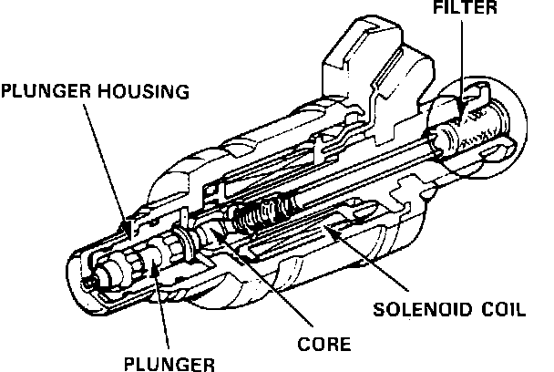
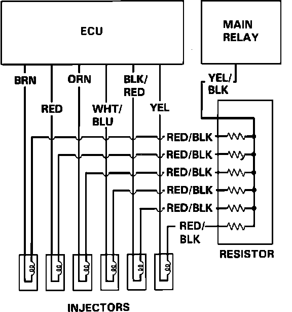

Fuel Injector: Description and Operation
Fuel Injector:

FUEL INJECTORS
The fuel injectors (6) are mounted on the intake manifold. The injectors are electrical solenoids that control fuel flow. Each time power is applied to a fuel injector the plunger pulls up a preset amount and fuel is sprayed directly at the intake valve. Since fuel pressure and plunger lift are constants, by changing the amount of time power is applied to the injector coil (injector duration), the amount of fuel delivered can be precisely controlled.
Injector Resistor Circuit Operation:

INJECTOR RESISTOR
The injectors are powered by the main relay whenever the ignition is turned ON. In the circuit between the fuel injectors and the main relay is the injector resistor. The resistor is actually 6 resistors, one for each injector. The unit lowers the current draw of each injector which prevents damage from overheating as well as increasing the response time of each injector. The ECU controls each injector ground sequentially from the following pins:
Cylinder #1 ECU pin A1
Cylinder #2 ECU pin A3
Cylinder #3 ECU pin A5
Cylinder #4 ECU pin A7
Cylinder #5 ECU pin A8
Cylinder #6 ECU pin A6